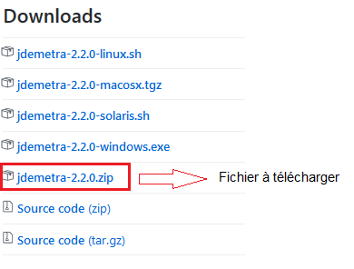

library(rjwsacruncher)
download_cruncher() # Pour télécharger le cruncher
configure_jwsacruncher() # Pour le configurer avec une version portableInstaller JDemetra+ et du cruncher
1 Installation de JDemetra+
Pour utiliser JDemetra+ il faut deux logiciels : JDemetra+ et Java.
1.1 Installation de JDemetra+
JDemetra+ est téléchargeable depuis le lien github de l’application : https://github.com/jdemetra/jdemetra-app/releases. Deux solutions pour l’installer : télécharger le fichier .exe qui nécessite des droits d’administrateur ou télécharger le .zip qui permet d’avoir une version portable du logiciel.
Attention : pour la seconde option ne pas télécharger le fichier Source code (zip) mais le fichier jdemetra+-2.2.2-bin.zip (pour la version 2.2.2) :

Une fois le fichier téléchargé, il suffit de le dézipper : le logiciel se trouve alors dans le dossier \nbdemetra\bin\, ce sont les fichiers nbdemetra.exe (version 32-bit) et nbdemetra64.exe (version 64-bit).
1.2 Utilisation d’une version portable de Java
Pour utiliser la version 2.2.2 de JDemetra+ il faut avoir la version 8 de Java (ou une version supérieure). Si l’on a pas cette version d’installée et que l’on n’a pas les droits d’administrateur pour installer Java il faut alors installer une version portable de Java et lancer JDemetra+ avec cette version de java.
Pour installer une version portable de java on peut par exemple télécharger jPortable depuis https://portableapps.com/apps/utilities/java_portable1 ou https://jdk.java.net/java-se-ri/12.
Pour lancer JDemetra+ avec cette nouvelle version de Java il faut :
créer un raccourci vers l’application

faire un clique-droit sur le raccourci et ensuite cliquer sur « Propriétés ». Il reste alors à modifier la variable « Cible » en ajoutant le paramètre suivant :
--jdkhome "[chemin du dossier Java64]".

Par exemple, si JDemetra+ et jPortable sont installés sousD:\Programmes\, la variable Cible contiendra l’adresseD:\Programmes\nbdemetra\bin\nbdemetra64.exe --jdkhome "D:\Programmes\Java64".
Attention : le chemin du raccourci est absolu, il doit donc être modifié à chaque fois qu’un des répertoires racines de JDemetra+ ou jPortable est déplacé.
2 Installation du cruncher
Le cruncher (JWSACruncher) est un outil qui permet de mettre à jour un workspace de JDemetra+ à partir de la console, sans devoir ouvrir JDemetra+. La mise à jour d’un workspace peut alors se faire à partir d’un autre logiciel statistique (R ou SAS par exemple). La version 2.2.2 du cruncher peut être téléchargée ici https://github.com/jdemetra/jwsacruncher/releases (fichier jwsacruncher-x.y.z-bin.zip) et les anciennes versions sont téléchargeables sous https://github.com/jdemetra/jdemetra-core/releases.
Si l’on utilise une version portable de Java (voir section précédente) il faut encore modifier certains paramètres pour utiliser le cruncher :
- dézipper le fichier téléchargé ;
- dans le dossier dézippé, ouvrir (par exemple avec Notepad++) le fichier
jwsacruncher.batprésent dans le sous-dossier\bin\(c’est-à-dire sousjdemetra-cli-2.2.2\bin\dans la version 2.2.2 du cruncher) ;
- modifier la valeur de la variable
JAVACMDde la ligne 71 (actuelleJAVACMD=java) par l’adresse vers le fichierjava.exede la version portable . Ainsi, si JPortable est installé sousD:\Programmes\, la nouvelle ligne estif "%JAVACMD%"=="" setJAVACMD="D:\Programmes\Java64\bin\java".
Le téléchargement et la configuration du cruncher peut également se faire via rjwsacruncher:
Footnotes
Si l’on utilise la version 64-bit de JDemetra+, bien installer la version jPortable 64-bit (en bas de la page).↩︎